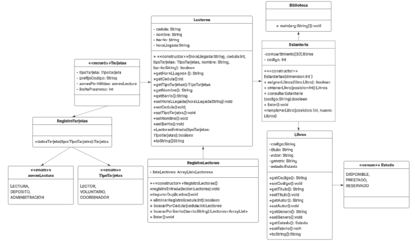
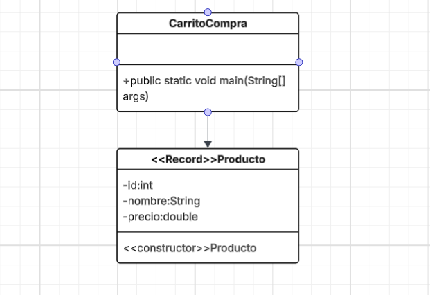
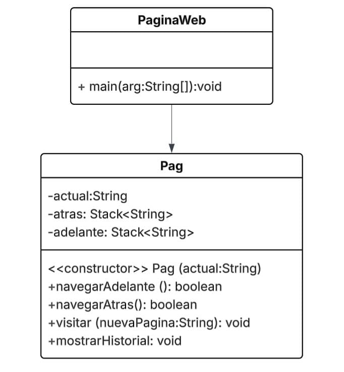

Unidad I: Introducción a las Estructuras de Datos
Conceptos Generales


Esta unidad explica qué son los algoritmos, cómo se representan los datos y por qué es
importante usar estructuras eficientes para optimizar tiempo y memoria.
Unidad II: Estructuras de Datos Lineales
Pilas (Stacks)

Las pilas funcionan con el principio LIFO. Útiles para recursión, backtracking y sistemas de deshacer.
- Tiene estas operaciones: Push (Agregar), Pop (Eliminar), Peek (Retornar el ultimo elemento), isEmpty (Saber si esta vacia), isFull (Saber si esta llena)
Colas (Simple)

Las colas siguen el principio FIFO. Se usan en sistemas por turnos, procesos y simulaciones.
- Tiene estas operaciones: Enqueue (Encolar), Dequeue (Desencolar), Peek (Retornar el ultimo elemento), isEmpty (Saber si esta vacia), isFull (Saber si esta llena)
Colas (Circular)

Las colas siguen el principio FIFO. Se usan en sistemas por turnos, procesos y simulaciones.
- Tiene estas operaciones: Enqueue (Encolar), Dequeue (Desencolar), Peek (Retornar el ultimo elemento), isEmpty (Saber si esta vacia), isFull (Saber si esta llena)
Colas (Priority)

Las colas siguen el principio FIFO. Se usan en sistemas por turnos, procesos y simulaciones.
- Tiene estas operaciones: Enqueue (Encolar), Dequeue (Desencolar), Peek (Retornar el ultimo elemento), isEmpty (Saber si esta vacia), isFull (Saber si esta llena)
Colas (Double)

Las colas siguen el principio FIFO. Se usan en sistemas por turnos, procesos y simulaciones.
- Tiene estas operaciones: Enqueue (Encolar), Dequeue (Desencolar), Peek (Retornar el ultimo elemento), isEmpty (Saber si esta vacia), isFull (Saber si esta llena)
Listas Enlazadas
Las listas enlazadas permiten almacenar datos dinámicamente mediante nodos con enlaces flexibles.
Unidad III: Estructuras No Lineales
Árboles
Los árboles representan jerarquías. Se usan en búsquedas, ordenamientos y sistemas de archivos.
Grafos
Los grafos modelan conexiones entre nodos. Se aplican en redes, rutas, mapas y análisis social.
Unidad IV: Archivos y Memoria Dinámica
Archivos
Los archivos permiten almacenamiento permanente organizado en formatos secuenciales o indexados.
Memoria Dinámica
Permite asignar y liberar memoria durante la ejecución, esencial para listas, árboles y grafos.